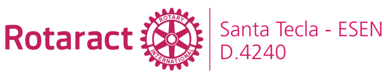
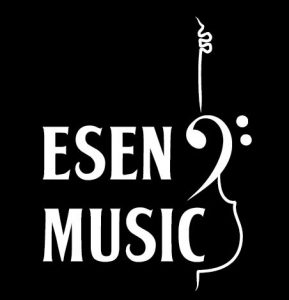
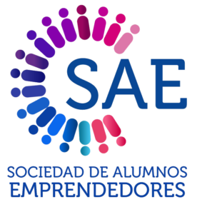
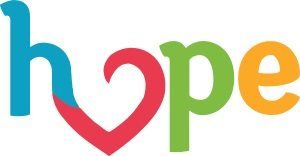
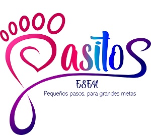

Our Clubs

Rotaract
We are young people committed to making a positive impact in the community through leadership, social projects, and professional development.

ESEN MUSIC
Our purpose is to develop the musical art of students with artistic vocation, supporting events organized by different associations and also performing outside the school.

Girl Up
It is a global development movement led by young people who take action to defend and achieve gender equity.

SAE
It is a society of entrepreneurial students from ESEN who are dedicated to promoting, developing and supporting any entrepreneurial activity.
Techo
Techo is an organization present in Latin America and the Caribbean that seeks to overcome the poverty experienced by thousands of people in precarious settlements, through the joint action of its residents and young volunteers.

EduTech
Our goal is to reduce the gap in access to technological tools and train students in robotics and technology to replicate it in schools in Santa Tecla.
ProBecas
It was created with the aim of organizing various fundraising activities that cover food, transportation and accommodation costs, according to the needs of each student.

Hope
It is an organization of young university students committed to the fight against childhood cancer in El Salvador.

Pasitos
It's an association that represents the future for many children in El Matazano, encouraging them to dare to pursue their dreams.